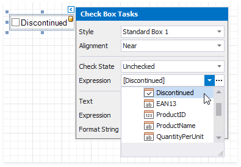
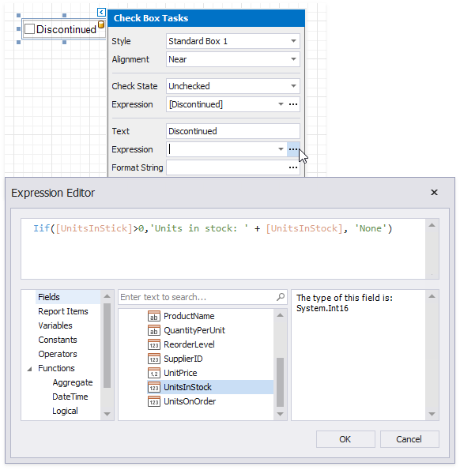
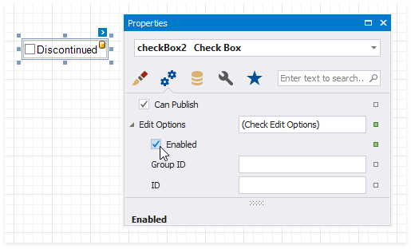
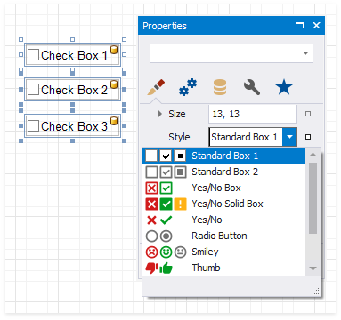

Check Box
The Check State property specifies the checkbox's state.

The Checked property indicates whether the checkbox is checked (displays a check mark) or not (is empty).
The Text property specifies the checkbox's caption. Double-click the checkbox to invoke its in-place editor and type the caption text.
Bind to Data
Drag a Boolean field from the Field List onto your report. This adds a new checkbox to your report and binds its Check State property to the dragged field.

If you add a checkbox from the Toolbox, click the control's smart tag, expand the CheckState property's Expression drop-down list and select a data field. This binds your control's CheckState property to a data source field.

The data field value specifies the checkbox's state:
- True or 1 - activates the Checked state;
- False or 0 - activates the Unchecked state;
- Any other value - activates the Indeterminate state.
You can bind your control's CheckState the checkbox caption to a data source field. Click the control's smart tag, expand the Expression drop-down list and select the data field.
The Expression option's ellipsis button invokes the Expression Editor. This Editor allows you to construct a complex binding expression with two or more fields.

Refer to the Bind Controls to Data topic for more information about the available data binding modes and how to create data-aware controls.
Interactivity
Change the Enabled checkbox within the Edit Options group to specify if users can change the checkbox state in Print Preview.

You can create checkbox groups to make them behave like radio lists. To group checkboxes, set their Group ID option within the Edit Options group a group ID value.

Customization
The Glyph Options property provides access to glyph settings.
Style - specifies a predefined glyph style.

Alignment - specifies the glyph's alignment within the control.
Size - specifies the glyph size.
Custom Glyphs - specifies a custom glyph image for each checkbox state (Checked/Unchecked/Indeterminate).

The Open File dialog is invoked when you specify custom glyphs.

The selected glyph image is saved to the report definition .repx file.